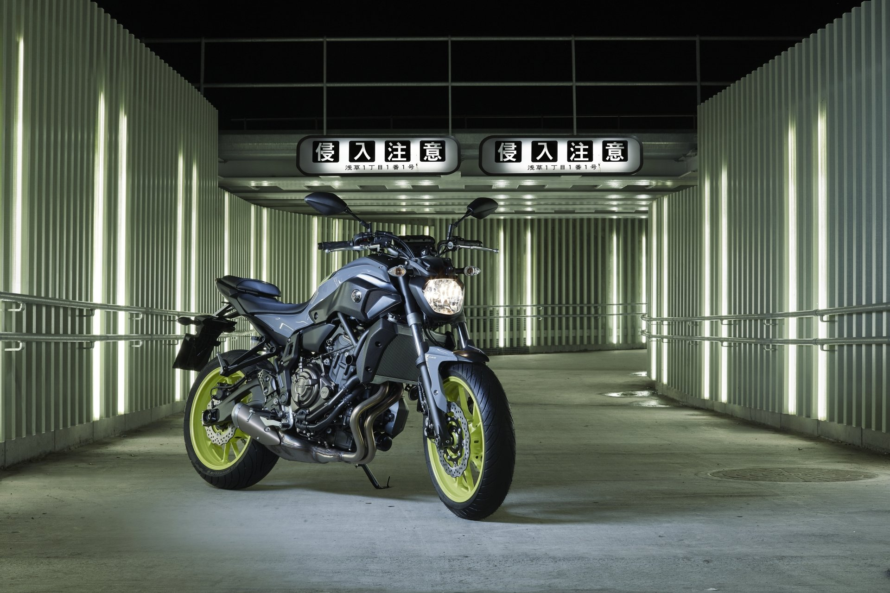
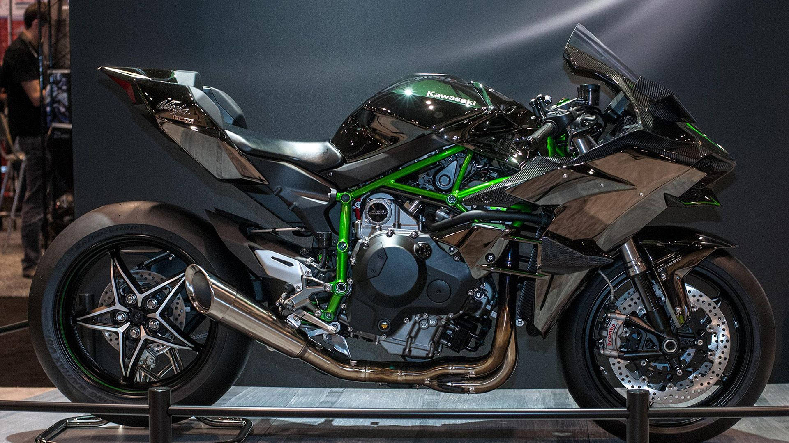

Venta de Motocicletas
Las motocicletas son una opción de movilidad eficiente, económica y versátil. En esta página se presenta una comparativa informativa de distintos modelos, analizando características como cilindrada, potencia y precios aproximados.
También se incluye información de marcas reconocidas y recomendaciones sobre seguridad vial y equipo de protección.
Breve Historia
Yamaha

Audio de motor:
Yamaha Motor se fundó en 1955 en Japón. Desde sus inicios se enfocó en motocicletas con buena relación entre rendimiento y fiabilidad, y con el tiempo se convirtió en una de las marcas más reconocidas a nivel mundial.
Calificación del producto: ★★★★☆
Reseña: Motocicleta versátil, potente y muy equilibrada para ciudad y carretera.
Kawasaki

Audio de motor:
Kawasaki es parte de un grupo industrial japonés con larga historia. En el mundo de las motos es famosa por su enfoque deportivo, con modelos que priorizan potencia, aceleración y diseño agresivo, especialmente en la línea Ninja.
Calificación del producto: ★★★★★
Reseña: Excelente potencia y diseño agresivo, ideal para amantes de la velocidad.
Honda

Audio de motor:
Honda Motor se estableció en 1948 en Japón. Se consolidó por su producción masiva, innovación y confiabilidad, destacando tanto en motos urbanas como en modelos de mayor cilindrada para carretera y aventura.
Calificación del producto: ★★★★☆
Reseña: Muy confiable, cómoda en algunos modelos durarera y con gran reputación en el mercado.
Italika

Audio de motor:
Italika es una marca mexicana que inició operaciones en 2004 y se popularizó por ofrecer motocicletas accesibles para el uso diario. En México es muy común para movilidad urbana y trabajo, por su disponibilidad y costos de mantenimiento.
Calificación del producto: ★★★☆☆
Reseña: Buena opción económica para movilidad urbana y trabajo diario.
Tipos de Motocicletas
- Naked: motocicletas versátiles para uso urbano.
- Sport: enfocadas en velocidad y rendimiento.
- Adventure: ideales para viajes largos.
- Urbana: económicas para transporte diario.
Comparativa de Modelos
| Modelo | Tipo | Cilindrada | Potencia | Precio | Disponibilidad | Comprar |
|---|---|---|---|---|---|---|
| Yamaha MT-07 | Naked | 689 cc | 74 HP | $189,000 | Disponible | |
| Kawasaki Ninja 400 | Sport | 399 cc | 45 HP | $149,000 | Disponible | |
| Honda CB500X | Adventure | 471 cc | 47 HP | $175,000 | Disponible | |
| Italika DM200 | Urbana | 200 cc | 15 HP | $39,999 | Disponible |
Ventajas y Desventajas por Tipo
| Tipo | Ventajas | Desventajas |
|---|---|---|
| Sport | Mejor desempeño y estabilidad a alta velocidad | Menos cómoda y más exigente en ciudad |
| Adventure | Comodidad + versatilidad para viajes | Más pesada y alta (puede costar maniobrar) |
| Naked | Ágil, práctica y divertida en uso diario | Menos protección contra viento |
| Urbana | Bajo costo y mantenimiento sencillo | Potencia limitada para carretera |
Especificaciones Técnicas
Datos aproximados para comparar rendimiento y uso.
| Modelo | Torque | Transmisión | Tanque | Peso | Vel. Máx. (aprox.) |
|---|---|---|---|---|---|
| Yamaha MT-07 | 68 Nm | 6 vel. | 14 L | 183 kg (wet) | ~229 km/h |
| Kawasaki Ninja 400 | ~38 Nm | 6 vel. | 14 L | 168 kg (wet) | ~169 km/h |
| Honda CB500X | 43.2 Nm | 6 vel. | 17.7 L | 199 kg (wet) | ~170 km/h |
| Italika DM200 | 16 Nm | 5 vel. | 11 L | 121 kg (wet) | ~110 km/h |
Seguridad Vial: Cascos y Equipo (precios de referencia)
En moto, el casco no es “accesorio”, es el seguro de vida que sí te puedes poner. Aquí hay ejemplos de precios desde gama alta hasta gama media, y un monotraje de precio medio.
Cascos (ejemplos)
| Marca / Modelo | Tipo | Rango | Precio aprox. (MXN) | Disponibilidad |
|---|---|---|---|---|
| AGV Pista GP RR | Integral racing (gama alta) | Más caro | $35,999 | Disponible |
| Alpinestars Supertech R10 | Integral racing (gama alta) | Alta | $32,399 | Disponible |
| AGV K1 S | Integral (gama media) | Medio | $6,300 | No Disponible |
Monotraje (precio medio)
| Equipo | Uso | Precio aprox. (MXN) | Disponibilidad |
|---|---|---|---|
| Dainese Laguna Seca 5 (monopiel) | Pista / conducción deportiva | $35,996 | Disponible |
Nota: Los precios son de referencia y pueden variar por talla, stock y tienda.